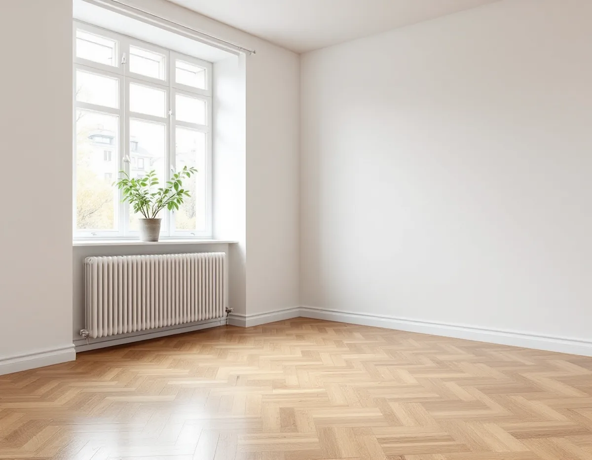
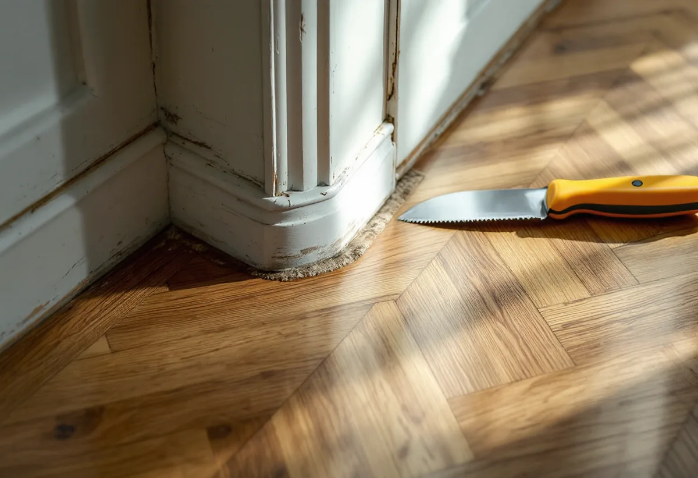
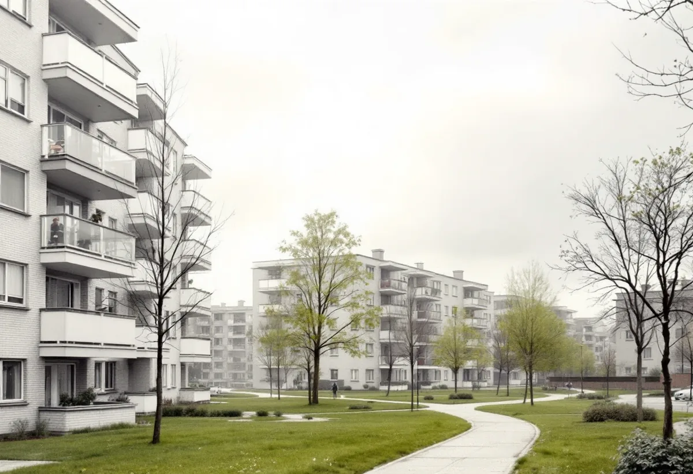

Platsbesök
Gratis besök, kontroll av slitskikt och matta.
Bredäng, Sätra, Vårberg och Skärholmen byggdes på 1960- och 70-talen, och i många lägenheter ligger fortfarande golven från byggåret, ibland under en senare matta. Geal Entreprenad AB slipar parkett och trägolv i lägenheter och radhus i Skärholmens stadsdelsområde och kontrollerar först att golvet tål det.

Stadens vägledning Varsam utveckling av småhus- och villaområden berättar att Bredäng var den första stadsdelen som planerades i stor skala och att bygget började 1962, följt av Sätra. Från 1965 intensifierades bostadsbyggandet i hela landet med målet om en miljon nya lägenheter till och med 1974. Det industrialiserade byggandet fick sitt genombrott i början av 1960-talet. Vägledningen beskriver stadsdelarnas grupper av skivhus i sex till tio våningar, lamellhus i tre till fyra våningar och småhusområden i utkanterna.
Stadens områdesfakta för 2025 visar att lägenheterna i flerbostadshus till stor del är hyresrätter, men att det också finns många bostadsrätter: 960 i Skärholmen, 959 i Sätra, 718 i Bredäng och 678 i Vårberg. Till det kommer nästan 2 000 småhus i stadsdelsområdet, de flesta radhus och kedjehus med äganderätt.

Byggnadsvårdsföreningen svarar i en fråga om en bostadsrätt från 1961 med parkett i original. Föreningen bedömer att golvet sannolikt inte är massiva parkettstavar utan lamellträ, alltså ett slitskikt i holländskt mönster limmat på två meter långa, spontade plywoodbrädor. Slitskiktet är normalt 4 millimeter och går att slipa någon gång.
Golvbranschens riktlinjer SLIP 22 säger att det vid slipning av lamellkonstruktioner finns en generell risk för stavsläpp, alltså att slitskiktet lossnar, och att golventreprenören ska upplysa kunden om det. Vid misstanke om stavsläpp, till exempel efter en vattenskada, bör man avråda från omslipning. Vi kontrollerar slitskiktet med en kniv i en springa i ett hörn och berättar vad vi ser innan något bestäms.
Ibland har parketten täckts med en plastmatta. Arbetsmiljöverket skriver att man ska göra en asbestanalys om det finns minsta tvekan om ett material innehåller asbest. Provet på en golvmatta ska tas ända ner till undergolvet så att alla lager kommer med, och finns det svartlim ska det också analyseras. Efter provtagningen torkas platsen ren och försluts med tjock grundfärg, primer eller tejp.
Rivning av asbesthaltigt material får enligt Arbetsmiljöverket bara göras av företag som har tillstånd. Visar provet asbest tas mattan därför bort av ett sådant företag innan vi slipar. Är provet fritt tar vi bort mattan och limresterna och bedömer om golvet under går att slipa eller om det behöver ersättas.
I en bostadsrätt avgör stadgarna vem som ansvarar för golvet. Slipningen bullrar och dammar, och Golvbranschens riktlinjer kräver dammavskiljare med HEPA-filter och andningsskydd av klass P3 eftersom damm från bland annat ek och bok är cancerframkallande. Vi stänger av rummet, skyddar ventilationsdonen och informerar grannarna om tiderna.
Grovslipningen görs med högt valstryck och korn 36–50, mellanslipningen med korn 60–80 och finslipningen med lägsta möjliga valstryck. Ett holländskt mönster slipas först diagonalt och sedan i rummets längdriktning. Före lackningen mäter vi luftfuktigheten, som enligt riktlinjerna ska ligga mellan 30 och 60 procent. Är golvet för tunt för att slipas finns golvläggning som alternativ.

Gratis besök, kontroll av slitskikt och matta.
Vid gamla mattor och svart lim.
Lösa stavar limmas, rummet skärmas av.
Diagonalt först i mönstrade golv.
Relativ fuktighet och fuktkvot kontrolleras.
Lack eller olja efter golvtyp.
Skatteverket räknar slipning av golv som rotarbete både i småhus och i bostadsrätter. I en bostadsrätt ska arbetet göras innanför lägenhetens tak, väggar och golv och gälla något du ansvarar för enligt föreningens stadgar.
Avdraget är högst 30 procent av arbetskostnaden och högst 50 000 kronor per person och år. Material och resor ger inget avdrag, och Geal drar avdraget direkt på fakturan.
Golvytan och antalet rum, om en gammal matta och lim ska bort, eventuell asbestanalys, lösa stavar som ska limmas, mönster och vilken ytbehandling du väljer. Efter ett gratis platsbesök får du ett skriftligt kostnadsförslag.
Parkett, trägolv, klinker och slipning.
Golvläggning i Stockholm →Takbyte, takbesiktning och plåtarbeten.
Takläggare i Skärholmen →Radhus i grupper i Bredäng, Sätra och Vårberg.
Takrenovering i Skärholmen →Radhustomterna och grannarna.
Attefallshus i Skärholmen →Radhusen, källarplanet och golvbrunnen.
Badrumsrenovering i Skärholmen →Hela ombyggnaden av radhuset.
Byggföretag i Skärholmen →Radhusen från 60- och 70-tal.
Fasadmålning i Skärholmen →Fasader på radhus och kedjehus.
Fasadrenovering i Skärholmen →Radhus i sammanhållna husgrupper.
Fönsterbyte i Skärholmen →Miljonprogrammets radhus.
Fönsterrenovering i Skärholmen →Nya golv i radhus och lägenheter.
Golvläggare i Skärholmen →1960-talskök, bostadsrätt och radhus.
Köksrenovering i Skärholmen →Lägenheter, trapphus och radhus.
Målare i Skärholmen →Rännor och stuprör i sluttningarna.
Plåtslagare i Skärholmen →Altan, plank och förråd vid radhuset.
Snickare i Skärholmen →Egna radhus i Sätra, Bredäng och Vårberg.
Takbyte i Skärholmen →Ny tapet i hyresrätt och bostadsrätt.
Tapetsering i Skärholmen →Radhusen, uterum och skärmtak.
Tillbyggnad i Skärholmen →Renovera hela huset eller lägenheten.
Totalrenovering i Skärholmen →